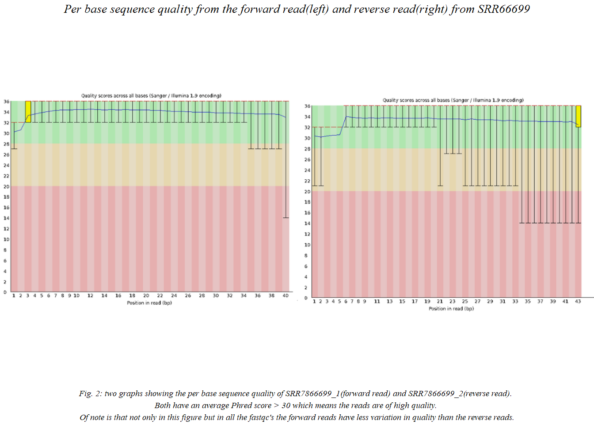
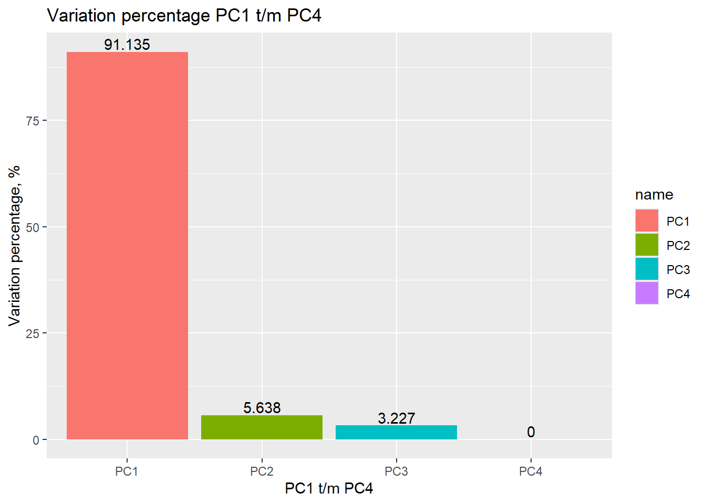
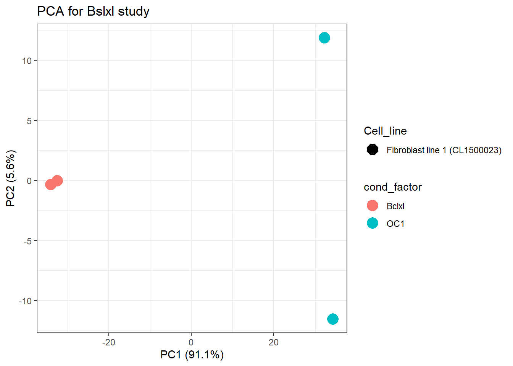
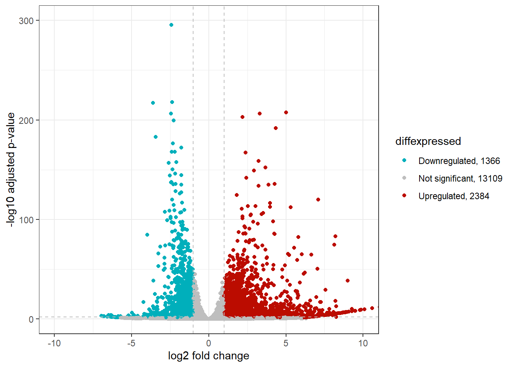
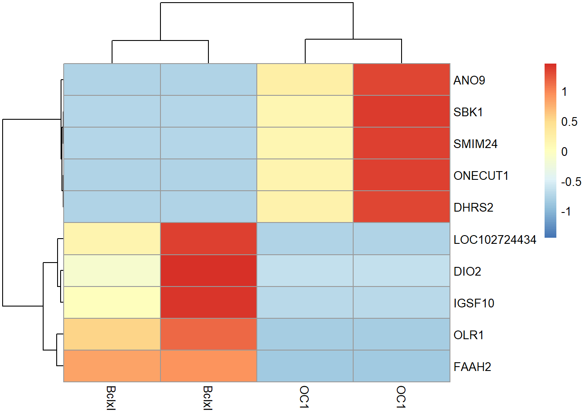
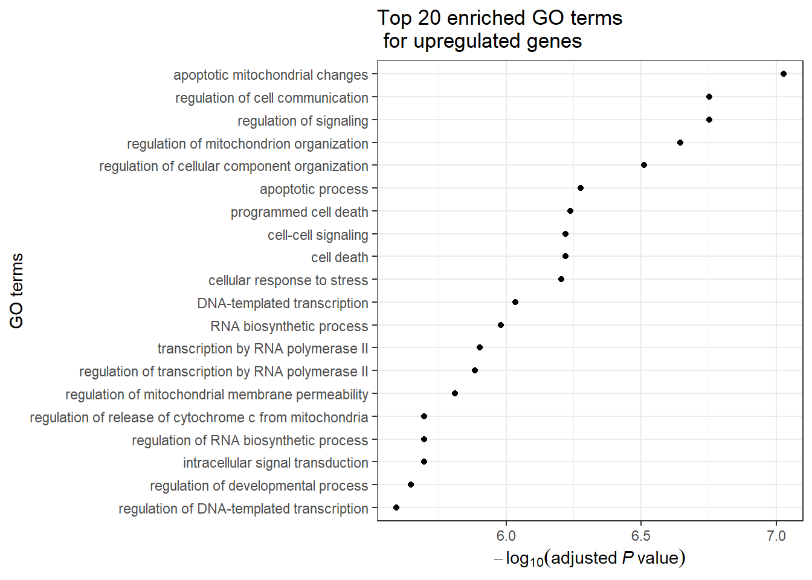
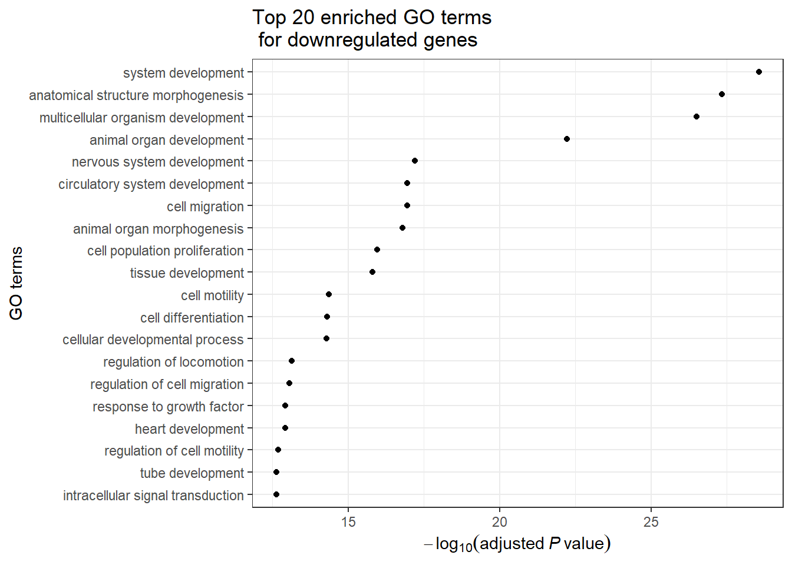

Chapter 5 Differential gene expression
Introduction
Our goal is to see if the transcription factor ONECUT1 is a transcription factor(TF) that will be able to turn fibroblast cells into brain cells. We will be doing this by researching the difference in gen expression between fibroblast treated with TF ONECUT1 and the control TF BCLXL. The RNA-sequencing was performed with Illumina NextSeq 500 using HighOutput kit v2 for 75 cycles. It was paired-end sequencing 2 × 43 bp. The dataset was generated using a stranded-protocol. The cells used were fibroblasts from a human female at the age of 29. The fibroblasts lines were cultured in tissue culture flasks in Dulbecco’s modified Eagle’s medium containing 20% (vol/vol) fetal bovine serum, 1% (vol/vol) penicillin/streptomycin and 1% (vol/vol) sodium pyruvate. Information from:(https://academic.oup.com/nar/article/47/11/5587/5485068?login=false)
Q score estimation
##
## Attaching package: 'gridExtra'## The following object is masked from 'package:dplyr':
##
## combineimg2 <- rasterGrob(as.raster(readPNG("assets/img/SRR7866699_1_Per base sequence quality.png")))
img3 <- rasterGrob(as.raster(readPNG("assets/img/SRR7866699_2_Per base sequence quality.png")))
top_annotation_Fig1 <- textGrob("Overrepresented sequences from the forward read from SRR7866702", gp = gpar(fontsize = 10, font = 8))
bottom_annotation_Fig1 <- textGrob("Fig. 1: The Overrepresented sequences of SRR7866702_1 which is shown because it's the only one to have a known possible source.", gp = gpar(fontsize = 7, font = 8))
top_annotation_Fig2 <- textGrob("Per base sequence quality from the forward read(left) and reverse read(right) from SRR66699", gp = gpar(fontsize = 10, font = 8))
bottom_annotation_Fig2 <- textGrob("Fig. 2: two graphs showing the per base sequence quality of SRR7866699_1(forward read) and SRR7866699_2(reverse read).
Both have an average Phred score > 30 which means the reads are of high quality.
Of note is that not only in this figure but in all the fastqc's the forward reads have less variation in quality than the reverse reads.", gp = gpar(fontsize = 7, font = 8))
#grid.arrange(img1, top=top_annotation_Fig1, bottom=bottom_annotation_Fig1)
grid.arrange(img2, img3, ncol = 2, top=top_annotation_Fig2, bottom=bottom_annotation_Fig2)
Overall the per base sequence average phred score is always above 30. The per sequence phred score is mostly above 30. In the forward read from the fibroblast treated with ONECUT1(run id:SRR7866702) in the Overrepresented sequences there is a hit suggesting that there is a possible contamination due to the TruSeq Adapter trimming sequence. A noteworthy observation is that the from all the fastqc files the forward primers consistently have a higher average phred score, less variation in phred score and a bigger amount of Overrepresented sequences.
overview raw bam file
library(Rsubread)
bam_dir="rnaseq_onecut/bam"
bam_files <- list.files(bam_dir, pattern = "(.70(0|1|2).*\\.bam$)|(.699\\.bam$)", full.names = TRUE)
bam_files## [1] "rnaseq_onecut/bam/SRR7866699.bam" "rnaseq_onecut/bam/SRR7866700.bam"
## [3] "rnaseq_onecut/bam/SRR7866701.bam" "rnaseq_onecut/bam/SRR7866702.bam"counts_dir <- "rnaseq_onecut/counts"
read_counts <- featureCounts(
files = bam_files,
annot.inbuilt = "hg38",
useMetaFeatures = TRUE,
strandSpecific = 0,
isPairedEnd = TRUE,
countReadPairs = TRUE,
nthreads = 10
)DESeqDataSetFromMatrix
library(DESeq2)
library(GOstats)
library(GO.db)
library("org.Hs.eg.db")
alignment_stats_one <- readRDS(file="rnaseq_onecut/bam/alignment_statistics.rds")
rds_one <- readRDS("rnaseq_onecut/counts/read_counts_OC1.rds")
count_matrix_one <- rds_one$counts
metadata_one <- read_csv("rnaseq_onecut/onecut_sampledata_OC1.csv")
metadata_one <- as.data.frame(metadata_one)
rownames(metadata_one) <- paste0(metadata_one$Run, ".bam")
colnames(count_matrix_one) == rownames(metadata_one)## [1] TRUE TRUE TRUE TRUEmetadata_one <- metadata_one %>% mutate(cond_factor = str_replace_all(Cell_type,c( "Skin derived fibroblast overexpressing Bclxl"="Bclxl", "2 days after induction of OC1 in skin derived fibroblasts"="OC1")))
metadata_one$cond_factor <- metadata_one$cond_factor %>% factor(levels = c("Bclxl", "OC1"))
metadata_one$cond_factor## [1] Bclxl Bclxl OC1 OC1
## Levels: Bclxl OC1dds_one <- DESeqDataSetFromMatrix(
countData = count_matrix_one,
colData = metadata_one,
design = ~ cond_factor
)
dds_normalized_one <- rlog(dds_one)
pca_one <- dds_normalized_one %>% assay() %>% t() %>% prcomp()
pca_one_summary <- summary(pca_one)$importance
pca_one_summary## PC1 PC2 PC3 PC4
## Standard deviation 38.44093 9.561226 7.233422 2.326055e-13
## Proportion of Variance 0.91135 0.056380 0.032270 0.000000e+00
## Cumulative Proportion 0.91135 0.967730 1.000000 1.000000e+00PCA Plot
pca_one_plotting <- cbind(metadata_one, pca_one $x)
PC1_one_var <- round(pca_one_summary["Proportion of Variance", "PC1"]*100, digits = 1)
PC2_one_var <- round(pca_one_summary["Proportion of Variance", "PC2"]*100, digits = 1)
pca_one_plotting <- cbind(metadata_one, pca_one$x)
pca_data <- data.frame(
name=c("PC1","PC2","PC3","PC4") ,
value=c(pca_one_summary[2,1]*100 ,pca_one_summary[2,2]*100 ,pca_one_summary[2,3]*100 ,pca_one_summary[2,4]*100 )
)
# Barplot
ggplot(pca_data, aes(x=name, y=value, fill=name)) +
geom_bar(stat = "identity")+
labs(title="Variation percentage PC1 t/m PC4")+
xlab("PC1 t/m PC4")+
ylab("Variation percentage, %")+
geom_text(aes(label = value), vjust = -0.2)
ggplot(pca_one_plotting) +
geom_point(aes(x=PC1, y=PC2, color = cond_factor, shape = Cell_line), size = 5) +
ggtitle("PCA for Bslxl study") +
xlab(paste0("PC1 (", PC1_one_var, "%)")) +
ylab(paste0("PC2 (", PC2_one_var, "%)")) +
theme_bw()
PC1 and PC2 capture 91.1+5.6% of all variation,which together is 96.7%. PC1 contains the most important variations. PC2 and PC3 are less important and PC4 has no significance. Most significant difference between cells is if they are treated with BCLXL or ONECUT1 seen along the PC1 axis. There is a slight difference between ONECUT1 cells along the PC2 axis, which refer to duplicate measurements. This observation is supported by a pheatmaps of activated genes, which also shows the light difference between duplo measurements in ONECUT1. The duplicate measurements of BCLXL are very close to each other along the PC2 axis and on the pheatmap.
Volcano Ploting
## estimating size factors## estimating dispersions## gene-wise dispersion estimates## mean-dispersion relationship## final dispersion estimates## fitting model and testing##
## out of 20818 with nonzero total read count
## adjusted p-value < 0.1
## LFC > 0 (up) : 4376, 21%
## LFC < 0 (down) : 3883, 19%
## outliers [1] : 0, 0%
## low counts [2] : 3959, 19%
## (mean count < 2)
## [1] see 'cooksCutoff' argument of ?results
## [2] see 'independentFiltering' argument of ?resultsresults_without_na_one <- data.frame(dge_results_one) %>% filter(!is.na(padj))
sign_genes <- results_without_na_one[which(results_without_na_one$padj < 0.01),]
topGene <- sign_genes[which.max(sign_genes$log2FoldChange),]
topGene_name <- rownames(topGene)
dge_plotting <- results_without_na_one %>%
mutate(signif = if_else(padj < 0.01, "padj < 0.01", "Not significant"))
dge_plotting$diffexpressed <- "NO"
dge_plotting$diffexpressed[dge_plotting$log2FoldChange > 1 & dge_plotting$pval < 0.01] <- "UP"
dge_plotting$diffexpressed[dge_plotting$log2FoldChange < -1 & dge_plotting$pval < 0.01] <- "DOWN"upreg <- sum(dge_plotting$diffexpressed=="UP")
down <- sum(dge_plotting$diffexpressed=="DOWN")
notreg <- sum(dge_plotting$diffexpressed=="NO")
dge_plotting$delabel <- rownames(dge_plotting)
dge_volcano <- dge_plotting %>%
ggplot(aes(x = log2FoldChange, y = -log10(padj), color = diffexpressed)) +
geom_point() +
geom_hline(yintercept = -log10(0.01), col = "gray", linetype = 'dashed')+
geom_vline(xintercept = c(-1, 1), col = "gray", linetype = 'dashed') +
coord_cartesian(ylim = c(0, 300), xlim = c(-10, 10)) +
xlab("log2 fold change") +
ylab("-log10 adjusted p-value") +
theme_bw() +
scale_color_manual(values = c( "#00AFBB", "grey", "#bb0c00"),
labels=c( paste( "Downregulated,", down) , paste("Not significant,", notreg) ,paste("Upregulated,", upreg)) )
dge_volcano 
Pheatmap ploting
library(pheatmap)
upreg_rows <- dge_plotting[dge_plotting$diffexpressed=="UP",]
up_reg_genes <- upreg_rows[order( upreg_rows$log2FoldChange,decreasing = TRUE),]
top5_genes <- rownames(up_reg_genes[order(up_reg_genes$log2FoldChange & up_reg_genes$padj)[1:5],])
top5_genes## [1] "3175" "10202" "388228" "338440" "284422"count_values_up <- assay(dds_one)[top5_genes,]
down_rows <- dge_plotting[dge_plotting$diffexpressed=="DOWN",]
down_reg_genes <- down_rows[order( down_rows$log2FoldChange),]
top5_downereg_genes <- rownames(down_reg_genes[order(down_reg_genes$log2FoldChange & down_reg_genes$padj)[1:5],])
top5_downereg_genes## [1] "4973" "1734" "158584" "102724434" "285313"## [1] "3175" "10202" "388228" "338440" "284422" "4973"
## [7] "1734" "158584" "102724434" "285313"count_values_up_and_down <- assay(dds_one)[top_5_up_and_5_down_genes,]
colnames(count_values_up_and_down) <- colData(dds_one)$cond_factor
geneSymbols <- mapIds(org.Hs.eg.db, keys=rownames(count_values_up_and_down), column="SYMBOL", keytype="ENTREZID", multiVals="first")## 'select()' returned 1:1 mapping between keys and columnsrownames(count_values_up_and_down) <- geneSymbols
pheatmap(count_values_up_and_down, scale = "row", show_rownames = TRUE)
Mapping with Ensemble DB
map_ids <- function(ids)
{
symbol <- list()
uniprot <- list()
ensemble<- list()
gen_ids <- list()
for (gen in ids) {
geneSymbol <- mapIds(org.Hs.eg.db, keys=gen, column="SYMBOL", keytype="ENTREZID", multiVals="first")
symbols <- unname(geneSymbol)
ensembles <- mapIds(org.Hs.eg.db, keys=geneSymbol, column="ENSEMBL", keytype="SYMBOL", multiVals="first")
ensembles <- unname(ensembles )
uniprots<-mapIds(org.Hs.eg.db, keys=geneSymbol, column="UNIPROT", keytype="SYMBOL", multiVals="first")
uniprots <- unname(uniprots)
ensemble[[length(ensemble)+1]] = ensembles
gen_ids[[length(gen_ids)+1]] = gen
symbol[[length(symbol)+1]]=symbols
uniprot[[length(uniprot)+1]]=uniprots
}
df = data.frame(entrez=unlist(gen_ids), symbol=unlist(symbol),ensemble=unlist(ensemble), uniport=unlist(uniprot) ) %>% as_tibble()
#print(df)
return(df)
}## 'select()' returned 1:1 mapping between keys and columns
## 'select()' returned 1:1 mapping between keys and columns
## 'select()' returned 1:1 mapping between keys and columns
## 'select()' returned 1:1 mapping between keys and columns
## 'select()' returned 1:1 mapping between keys and columns
## 'select()' returned 1:1 mapping between keys and columns
## 'select()' returned 1:1 mapping between keys and columns
## 'select()' returned 1:1 mapping between keys and columns
## 'select()' returned 1:1 mapping between keys and columns## # A tibble: 3 × 4
## entrez symbol ensemble uniport
## <chr> <chr> <chr> <chr>
## 1 3175 ONECUT1 ENSG00000169856 Q9UBC0
## 2 10202 DHRS2 ENSG00000100867 Q13268
## 3 388228 SBK1 ENSG00000188322 Q52WX2Go stats analyse
Function calling for upregulated genes

Function calling for downregulated genes

Conclusion
Treatment with ONECUT induces reprogramming of fibroblasts into neurons and expression of neuronal genes, regulates DNA transcription, synthesis of RNA and transcription by RNA polymerase II.
ONECUT1 and BCLXL have antagonistic activity.This can be seen from the heatmaps and PCA map. The treatment with ONECUT1 activates genes : 3175, 10202, 388228, 338440, 284422
- ONECUT1. This gene gene encodes a member of the ONECUT family of transcription factors, induced neuronal morphology and expression of neuronal genes. (Gene summary Entrez,https://www.proteinatlas.org/ENSG00000169856-ONECUT1).
- DHRS2. This gene encodes enzyme that activates hormones, such as steroid hormones, prostaglandins; reduces proliferation, migration and invasion of cancer cells. (Gene summary Entrez, https://www.proteinatlas.org/ENSG00000100867-DHRS2)
- SBK1. This gene enables protein serine/threonine kinase activity (Gene summary Entrez,https://www.proteinatlas.org/ENSG00000188322-SBK1)
- ANO9. The protein encoded by this gene is a member of the TMEM16 family of proteins, some of which form integral membrane calcium-activated chloride channels.(Gene summary Entrez,https://www.proteinatlas.org/ENSG00000185101-ANO9)
- SMIM24 This gene encodes the protein predicted to be located in membrane. Predicted to be integral component of membrane.(Gene summary Entrez,https://www.proteinatlas.org/ENSG00000095932-SMIM24)
From the Go-terms enrichment analysis we can conclude that treatment with ONECUT suppresses gene activity associated with BCLXL: antiapoptotic genes, proliferation, cancer cell migration.